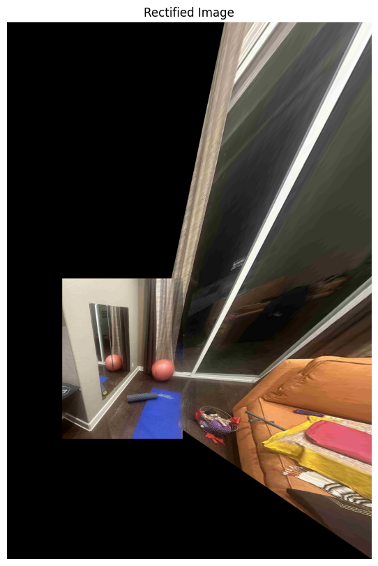
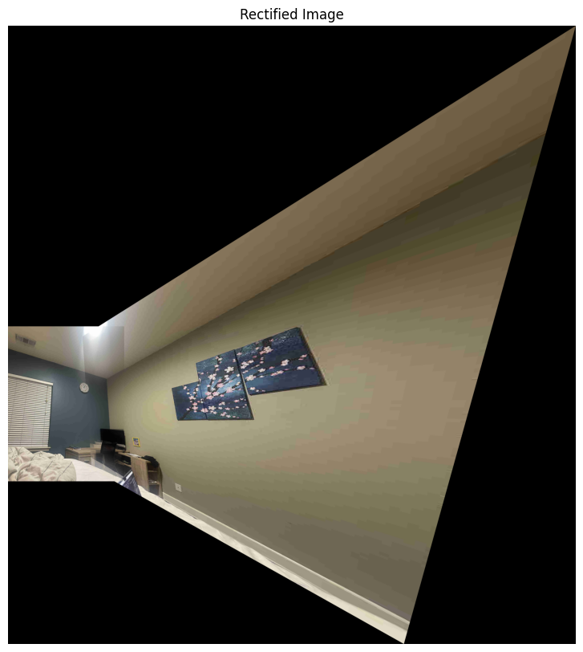

This project was about learning how to do image mosaicing. We shoot and digitize pictures, recover homographies, warp images, and blend images into a mosaic.
By selecting corresponding points between two images, we can compute a homography matrix. The homography matrix does an affine transformation to map points from one image to the corresponding points in the other image. We can then use this homography matrix to warp one image into the perspective of the other.
The affine transformation can be used to rectify an image, aka "straighten" it so that a specific part of the image appears flat and the focus of the image. The affine transoformation can also be used to create a mosaic by making one image appear to be in the perspective of another image.
Picture of the view outside my apartment (taken from balcony), and then the rectification of an exterior wall of a building in my view.


Stock photo of a room, with the rectification of the mirror.


Warping two photos taken of my view, from my balcony.

Warping two photos taken of a room in our house.
Warping two photos taken of my bedroom.
